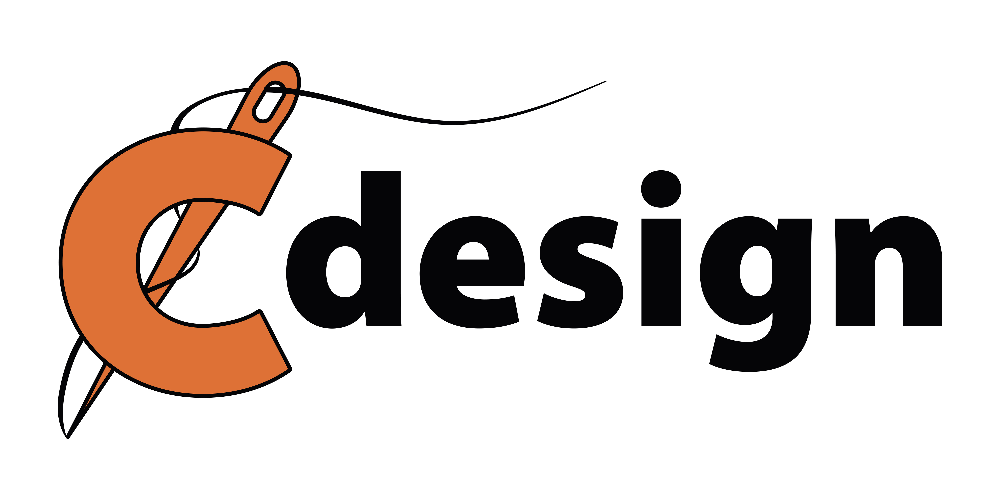
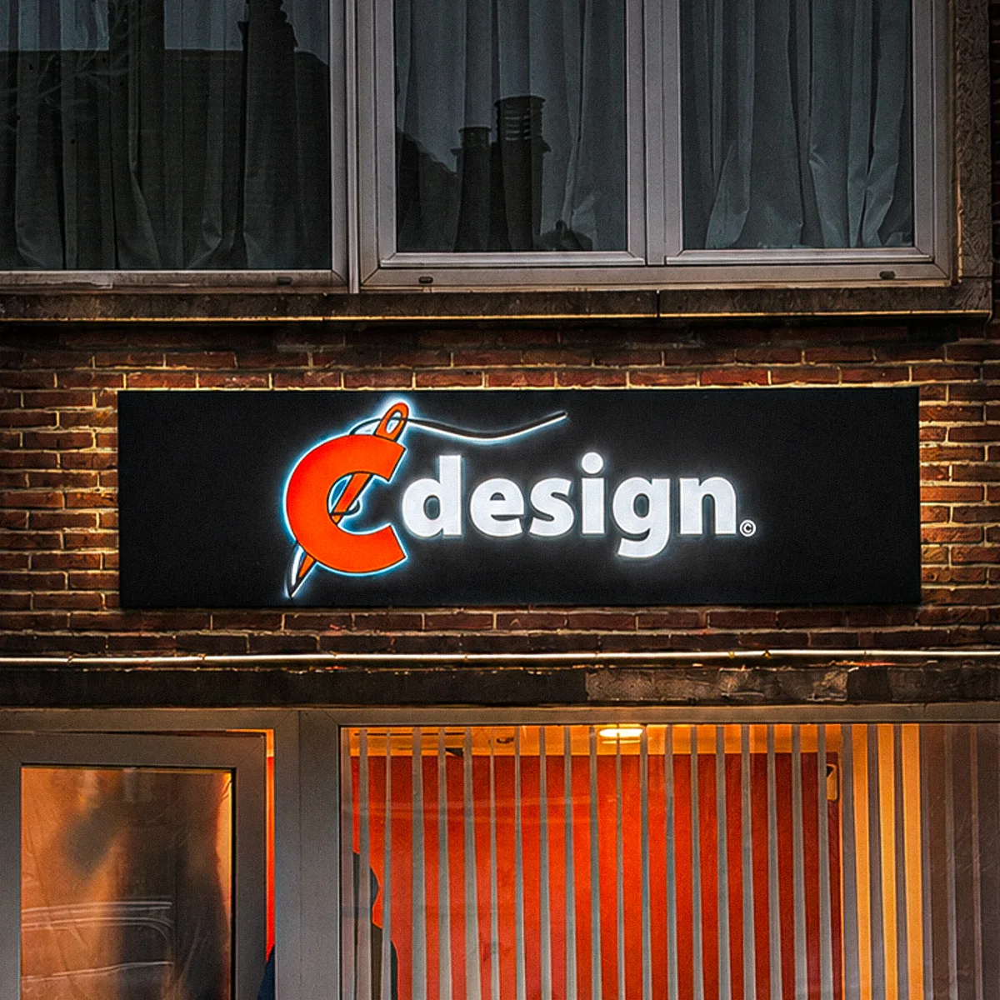
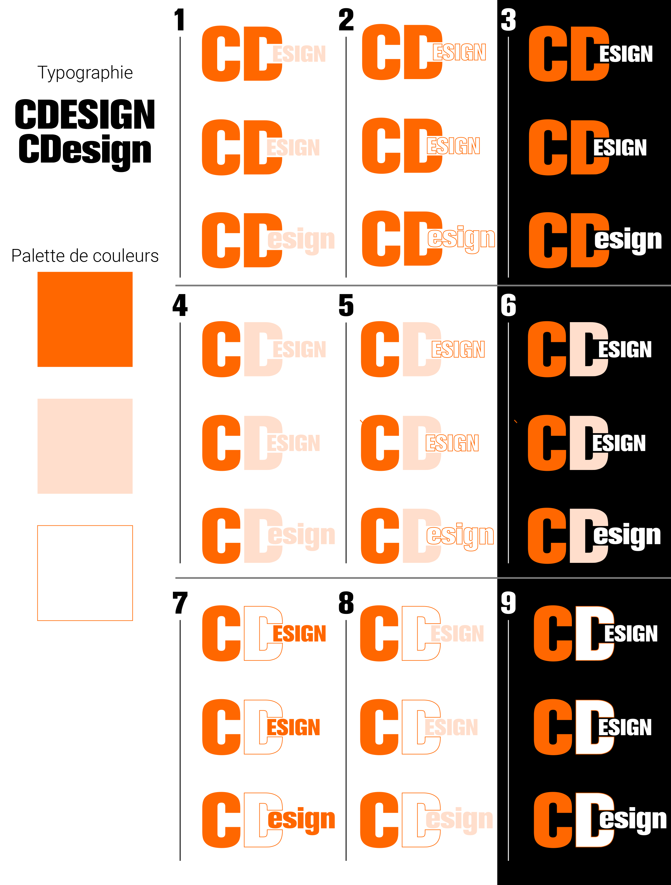
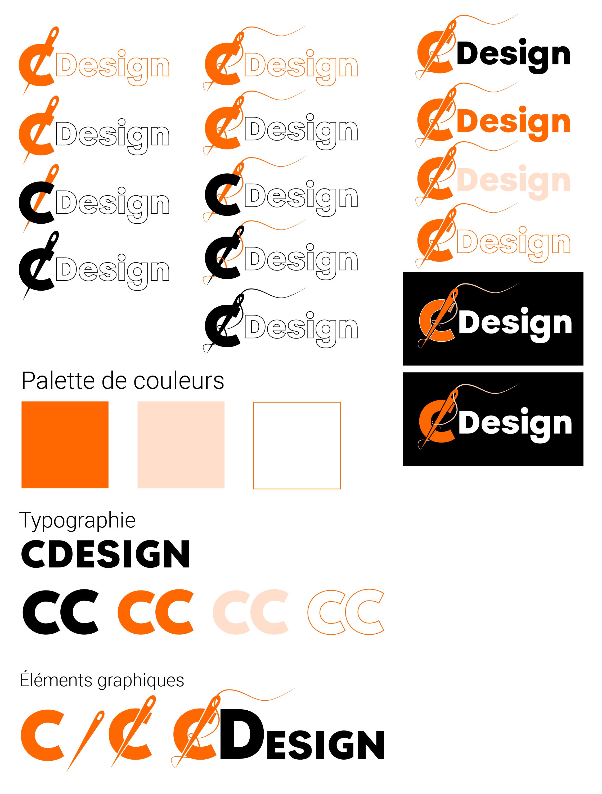

Complete graphic identity
A logo designed for Cdesign, a textile printing company based in Belgium from the first sketch all the way to the sign above their storefront.

The brief started from zero: around forty sketches were drawn to explore different directions around the name Cdesign. The client narrowed it down to five. From there, each of those directions was developed into several finished versions, until one stood out the one that now sits above the storefront, their visit card or their staff uniforms.

Before landing on the final logo, a large part of the work was typographic: weight, proportions, the spacing between the symbol and the word "design," aligned or offset versions, tested on both light and dark backgrounds. Every option was tested in context before settling on the combination that read best and felt closest to the client's identity.

